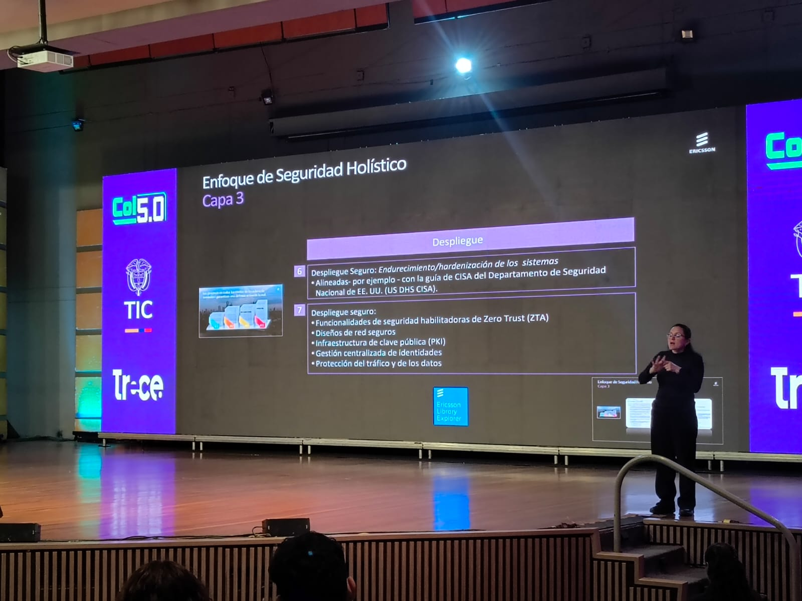
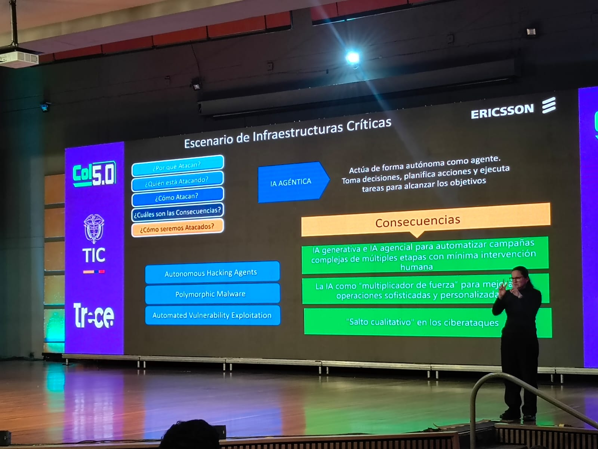
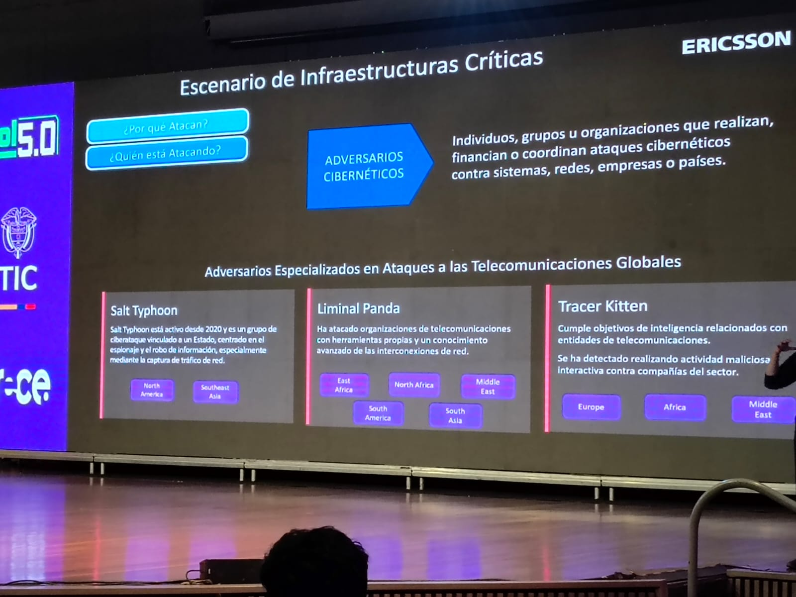
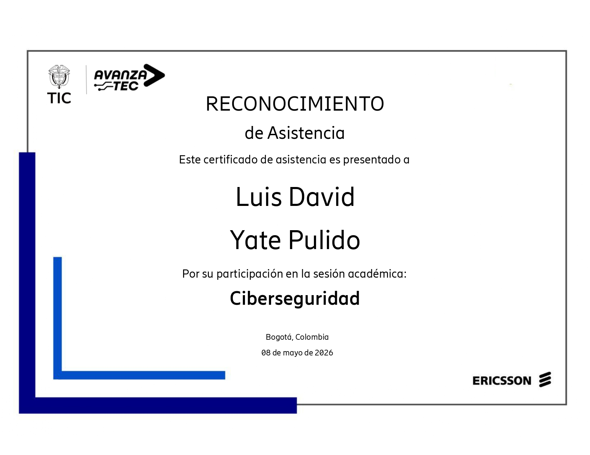

Mi experiencia
Español
Estuve presente en la conferencia de ciberseguridad donde se narró, explicó y tomaron en cuenta los detalles base de la estructura mundial, tanto a nivel nacional como internacional, enfocados en el análisis de casos reales contextualizados por países, empresas y entidades a nivel global. Fue una sesión que abrió mi perspectiva sobre la magnitud de las amenazas digitales que enfrentamos hoy y la importancia crítica de construir sistemas robustos y políticas de seguridad bien fundamentadas.
English
I attended the cybersecurity conference where the foundational details of the global digital security structure were narrated and discussed — at both the national and international level — focusing on real-world cases contextualized by countries, companies and entities globally. It was a session that broadened my perspective on the magnitude of digital threats we face today and the critical importance of building robust systems and well-founded security policies.
Palabras clave
Galería



Certificado
